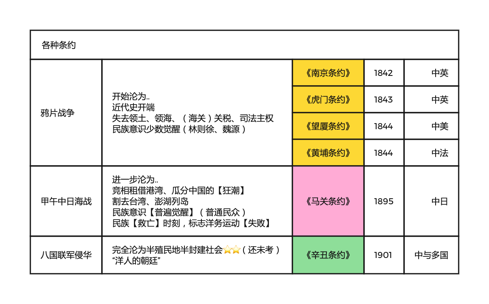
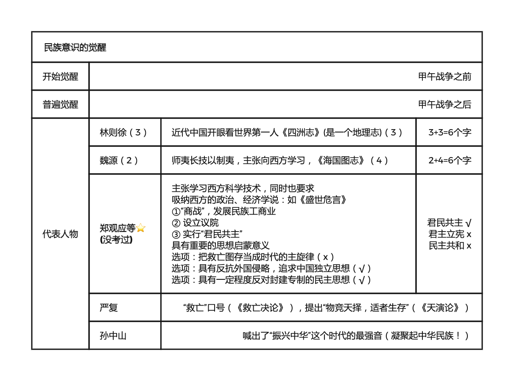

反对外国侵略的斗争
2022.09.10
两大历史任务&两大矛盾
两大历史任务【民族独立 人民解放】；【国家富强 人民富裕】
- 前是后的必要前提
- 后是前的最终目的和必然要求
两大矛盾【帝国主义和中华民族的矛盾】；【封建主义和人民大众的矛盾】
- 中国社会诸多矛盾中上两个是主要的
- 两个主要矛盾中，帝国主义和中华民族的矛盾，是主要中的主要
不平等条约与后果

| 战争 | 时间 | 条约 | 半殖半封 | 反抗 | 民族意识 |
|---|
| 鸦片战争 | 1840 | 南京(第一)、虎门、望厦、黄埔 | 开始 | 太平天国，洋务 | 少数觉醒 |
| 甲午中日海战 | 1894-1895 | 马关（割台湾） | 进一步 | 维新运动1989 | 普遍觉醒 |
| 八国联军侵华 | 1900 | 辛丑 | 完全 | 辛亥革命 | |
| | | | | 五四运动 | 全面觉醒 |
- 英国占领香港：《南京条约》《北京条约》《拓展香港界址专条》
- 割让台湾：日本《马关条约》
- 收回台湾、澎湖列岛：《开罗宣言》《波茨坦公告》《日本投降书》《中日联合声明》
向西方学习

- 林则徐：《四洲志》、睁眼看世界
- 魏源：《海国图志》、师夷长技以制夷、向西方学习(但是 技术)
- 郑观应：《盛世危言》、“商战、议院、君民共主”
- 严复：《救亡决论》、“救亡”、物竞天择，适者生存